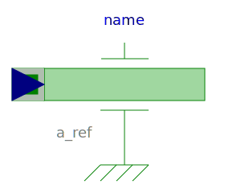
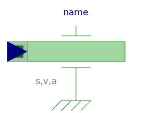
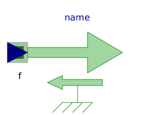
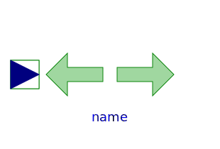
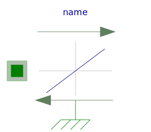
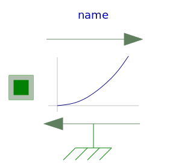
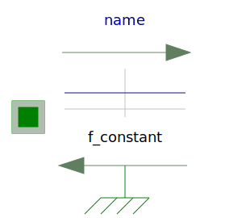
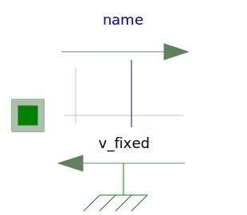
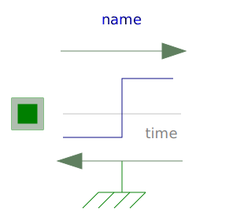
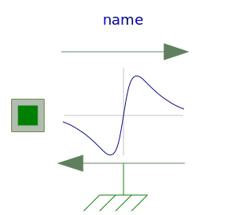

This package contains ideal sources to drive 1D mechanical translational drive trains.
| Name | Description |
|---|---|
| Forced movement of a flange according to a reference position | |
| Speed | Forced movement of a flange according to a reference speed |
|  Accelerate | Forced movement of a flange according to an acceleration signal |
|  Move | Forced movement of a flange according to a position, velocity and acceleration signal |
|  Force | External force acting on a drive train element as input signal |
|  Force2 | Input signal acting as torque on two flanges |
|  LinearSpeedDependentForce | Linear dependency of force versus speed |
|  QuadraticSpeedDependentForce | Quadratic dependency of force versus speed |
|  ConstantForce | Constant force, not dependent on speed |
| Constant force changing sign with speed | |
|  ConstantSpeed | Constant speed, not dependent on force |
|  ForceStep | Constant force, not dependent on speed |
|  EddyCurrentForce | Simple model of a translational eddy current brake |